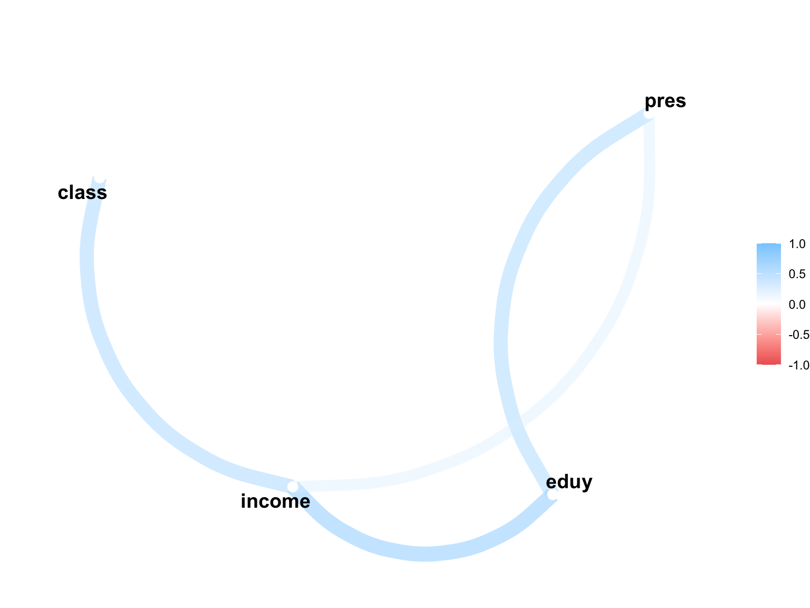
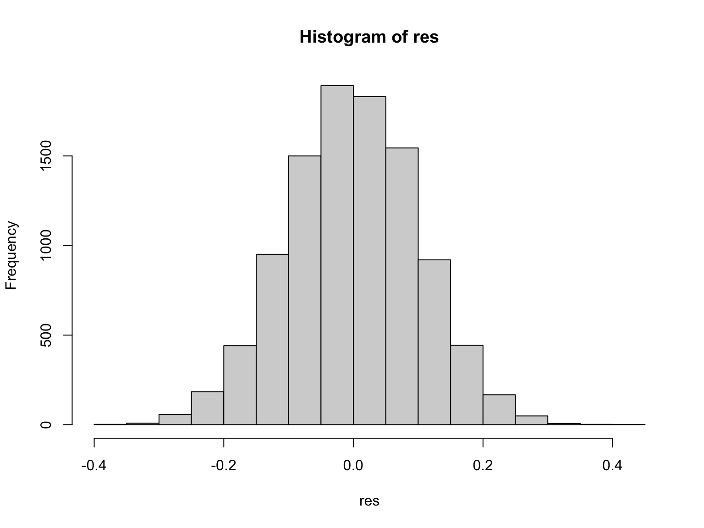

6日目 : 相関分析
2つの連続変数(continuous variables)間の関係をみるための方法を学習します。 たとえば，職の社会的威信の高さ(威信スコア)と収入の関連を調べたい、としましょう。 社会学では威信スコアを用いて次のような研究を行っています。
- 社会階層論「地位の一貫性」
- 時代におって地位の一貫性は異なる。
まず連続変数と連続変数の関係を調べるため，散布図(scatter diagram)を書き，その後に相関係数(correlation coefficient)をみます。
散布図
散布図(scatter diagram)とは、２つの連続変数の関係を視覚化するための図です。 散布図は，横軸に1つの変数をとり，縦軸にもう1つの変数をとることで，2つの変数の関係を視覚化します。 練習として最初からRに用意されているデータセットcarsを用いて散布図を書いてみましょう。
グラフを作成するために、基本関数であるplot()を用います。 ここでは横軸にspeed(速度)、縦軸にdist(制動距離)をとる散布図を書いてみましょう。
散布図からは、速度が上がるほど、制動距離が長くなる傾向があることがわかります。 このように、散布図は2つの連続変数の関係を視覚化するための便利な方法です。
ピアソンの積率相関係数
散布図からは、2つの連続変数の関係を視覚化することができました。 次に、2つの連続変数の関係を数値化するために、相関係数(correlation coefficient)を計算します。 よく利用されるピアソンの積率相関係数(peason’s correlation coefficient)を計算します。 ピアソンの積率相関係数(以下、特に断らずに相関係数というときはこれ)は、2つの連続変数の間の線形関係を測定するための指標です。
相関係数を計算するために必要な要素として，まずは2変数の共分散(covariance)を計算します。 確率変数 x と y の共分散を Cov_{xy} とすると、次のように定義されます。
Cov_{xy} = \frac 1n \sum_{t=1}^n (x_i - \bar x) (y_i - \bar y)
と計算できる。 ここで分子が x と y のかけ算となっていることに注目しましょう。 各変数から平均値を除いた \{x - \bar x, y - \bar y \} の散布図を書くと，
par(family="HiraKakuPro-W3")
mdist <- cars$dist - mean(cars$dist)
mspeed <- cars$speed - mean(cars$speed)
plot(mdist,mspeed,xlab="距離の平均偏差", ylab="速度の平均偏差")
abline(h = mean(mspeed))
abline(v = mean(mdist))と、データの中心(平均)が0になっていることが分かります(定義より自明です)。
共分散の分子が (x_i - \bar x) \times (y_i - \bar y) となっているため、データの組 \{x_i, y_i\} のうち、グラフの右上と左下の組は、x_i - \bar x と y_i - \bar y の符号が同じ(正)となり、共分散の分子は正となります。 一方、グラフの左上と右下の領域に位置するデータの組はかけ算の符号が負となります。 このかけ算の結果の平均が共分散であるため，共分散の符号が正ということは，右上や左下のデータが多い，つまり右肩上がりの関係がある，ということを示しています。
par(family="HiraKakuPro-W3")
group <- as.factor(ifelse(mdist >= 0 & mspeed >= 0 | mdist < 0 & mspeed < 0, 1, 0))
plot(mdist,mspeed,col=c("blue","red")[group],xlab="距離の平均偏差",ylab="速度の平均偏差")
abline(h = mean(mspeed))
abline(v = mean(mdist))共分散は2変数のかけ算となっており，単位に依存してしまうため，各変数の標本標準偏差sで除することで基準化したものが，相関係数(correlation coefficient)である。
r _{xy} = \frac{C_{xy}}{s_x \times s_y} = \frac{\frac 1n \sum _{i=1}^n (x_i - \bar x)(y_i - \bar y)}{\sqrt{\frac 1n \sum _{i=1}^n (x_i - \bar x)^2} \times \sqrt{\frac 1n \sum _{i=1}^n (y_i - \bar y)^2} }
これは定義より-1から1の値を取る。
相関係数の統計的検定
t値を算出して判定する。 母集団における相関係数が0であるという帰無仮説の下でのt値を計算する。
t = |r| \times \frac{\sqrt{n-2}}{\sqrt{1-r^2}}
相関係数の結果の出し方
対角線の右上(グレー部分)は書いても書かなくてもOKである。有意かどうかの記号を数値の右に書く。 表の注で，サンプルサイズnや有意性の記号の意味を説明する。
| 年齢 | 教育年数 | 職業威信スコア | 個人所得 | |
|---|---|---|---|---|
| 年齢 | 1.00 | - | - | - |
| 教育年数 | -0.19** | 1.00 | - | - |
| 職業威信スコア | -0.05 | 0.37** | 1.00 | - |
| 個人所得 | 0.11** | 0.27** | 0.39** | 1.00 |
相関分析の注意
- 異なる相関関係をもつグループは分けて分析する
- 相関係数は外れ値の影響を受けやすい
分析
データを読み込む。
pacman::p_load(tidyverse)
df <- read_csv("data/chap8.csv")Rows: 20 Columns: 5
── Column specification ────────────────────────────────────────────────────────
Delimiter: ","
dbl (5): ID, eduy, pres, income, class
ℹ Use `spec()` to retrieve the full column specification for this data.
ℹ Specify the column types or set `show_col_types = FALSE` to quiet this message.サンプルは女性から構成されており，eduyは教育年数，presは職業威信スコア，incomeは所得，classは階層帰属意識である。 階層帰属意識とは，自分がどこの階級に属するかを答えさせたものである。
教育年数と職業威信スコア
まず，教育年数eduyと職業威信スコアpresの散布図を書く。
plot(df$pres ~ df$eduy)plot()はplot(縦軸 ~ 横軸)の順番で書く。
この散布図より，教育年数が長いほど職業威信スコアが高い，という傾向にあることがわかる。
次に，相関係数を計算し，検定も同時に行うために，cor.test()を用いる。
cor.test(df$pres,df$eduy, alternative = "two.side")
Pearson's product-moment correlation
data: df$pres and df$eduy
t = 2.8041, df = 18, p-value = 0.01173
alternative hypothesis: true correlation is not equal to 0
95 percent confidence interval:
0.1440048 0.7989618
sample estimates:
cor
0.5513883 cor.test()は，相関係数とt検定を同時に表示してくれる基本関数である。相関係数だけならcor()で出せる。
となる。
相関係数は，0.55となり，比較的強い正の相関があることがわかる。 また，t検定の結果，p値は0.0117 であり，5％水準で有意である。
愚直に計算してみる。
定義通りに相関係数やt値を計算し，上記の結果が正しいかどうか確認する。 まず，相関係数を計算する。
dpres <- df$pres - mean(df$pres)
deduy <- df$eduy - mean(df$eduy)
cov <- sum( dpres*deduy) / (nrow(df)-1)
sy <- sqrt ( sum( dpres^2) / (nrow(df)-1) )
sx <- sqrt ( sum( deduy^2) / (nrow(df)-1) )
ryx <- cov/(sy*sx)
ryx[1] 0.5513883相関係数が0.55と計算でき，上記結果と一致した。 次に，t値を計算する。
[1] 0.0126t値は2.8041となり，上記結果と一致している。 自由度18，t値が2.8041のもとでp値は，0.0126となる。あれ，結果がちょっと違う。。。
教育年数と所得
課題として，教育年数と所得のデータを用いて再分析する。 最後には，ID以外の変数間の相関係数を計算し，相関行列を作成する。 相関行列を出力するためのパッケージが複数存在するので，それを見つけて使ってみよう。
まずは教育年数と所得の散布図を作成する。
plot(df$income ~ df$eduy)この散布図から，教育年数が長いほど所得が高い傾向にあることがわかる。 次に，相関係数とそのt検定を行う。
cor.test(df$income,df$eduy)
Pearson's product-moment correlation
data: df$income and df$eduy
t = 3.693, df = 18, p-value = 0.001665
alternative hypothesis: true correlation is not equal to 0
95 percent confidence interval:
0.3016857 0.8516407
sample estimates:
cor
0.656555 相関係数は，0.66となり，比較的強い正の相関があることがわかる。 また，t検定の結果，p値は0.0017 であり，1％水準で有意である。 したがって，教育年数と所得との間に相関関係は無い，という帰無仮説は棄却され，統計的に有意な正の相関が確認された。
相関係数表
最後に，全変数の相関係数を計算し，相関係数表を作成する。 相関係数の視覚化に用いられるパッケージとして，psychとcorrrを用いてみる。
まず基本関数であるcor()を用いて，相関係数行列を作成する。
eduy pres income class
eduy 1.00 0.55 0.66 0.22
pres 0.55 1.00 0.31 0.16
income 0.66 0.31 1.00 0.56
class 0.22 0.16 0.56 1.00シンプルです。 次に，心理学で用いられるパッケージpsychを用いて，作図する。
次のパッケージを付け加えます: 'psych'以下のオブジェクトは 'package:ggplot2' からマスクされています:
%+%, alphapar(family="HiraKakuPro-W3") # Macで日本語表示する
pairs.panels(df[,c("eduy","pres","income","class")])psychパッケージは，心理学研究で用いられる分析道具や作図ができる便利なもの。 ここではpairs.panels()で相関係数行列を作成してみた。
グラフィカルです。
最後に，もっとも有力かつ見た目に美しい図表が作成可能なcorrrパッケージを紹介する。
correlate()関数で作表する。
Correlation computed with
• Method: 'pearson'
• Missing treated using: 'pairwise.complete.obs'| term | eduy | pres | income | class |
|---|---|---|---|---|
| eduy | ||||
| pres | .551 | |||
| income | .657 | .307 | ||
| class | .218 | .164 | .561 |
作図もできる。
rplot(cortab)もう少し工夫してみる。
こんなのも作れる。
network_plot(cortab)
シミュレーション
まず母集団が無相関の2変数を作成する。
rnorm()で正規分布からデータを10,000個ずつ取り出して，xとyの2変数を作成する。 もちろん，この2変数間の相関係数は-0.02である。
次に，この2変数から100個のサンプルを取り出し，相関係数を計算する。
相関係数は，0.0081153となった。 次に，この試行を10,000回繰り返し，相関係数10,000個のヒストグラムを作成する。
set.seed(121)
trial = 10000
res <- numeric(trial)
for (i in 1:trial) {
sx <- sample(x, 100, rep=T)
sy <- sample(y, 100, rep=T)
res[i] <- cor(sx,sy)
}
hist(res)
この相関係数の分布は，平均が-8^{-4}，標準偏差が0.1011のt分布に従っている。